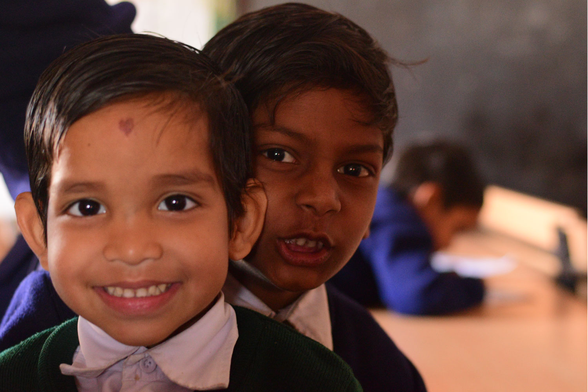
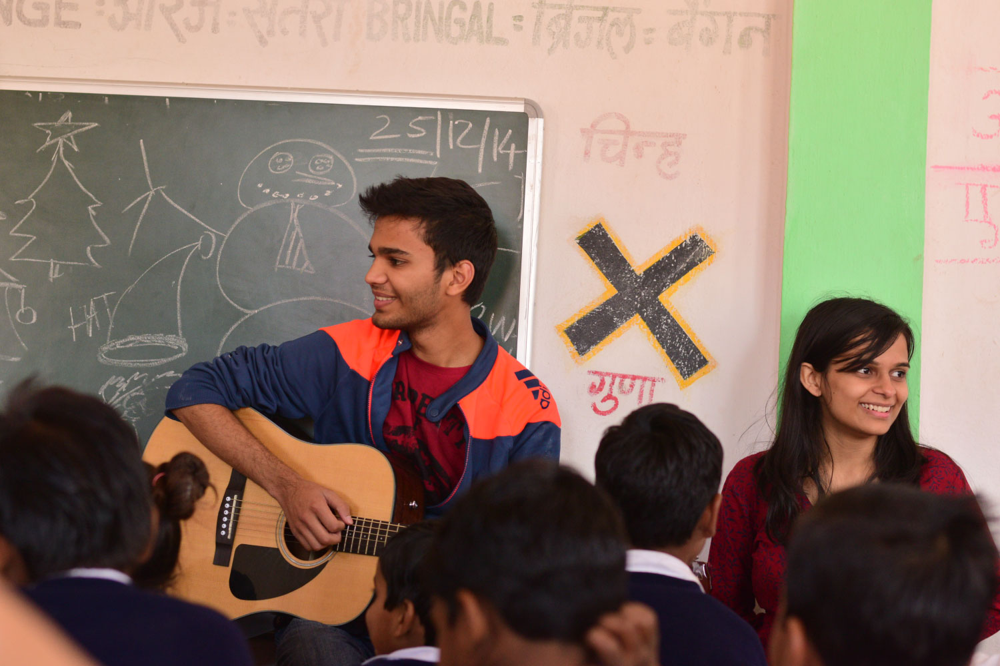
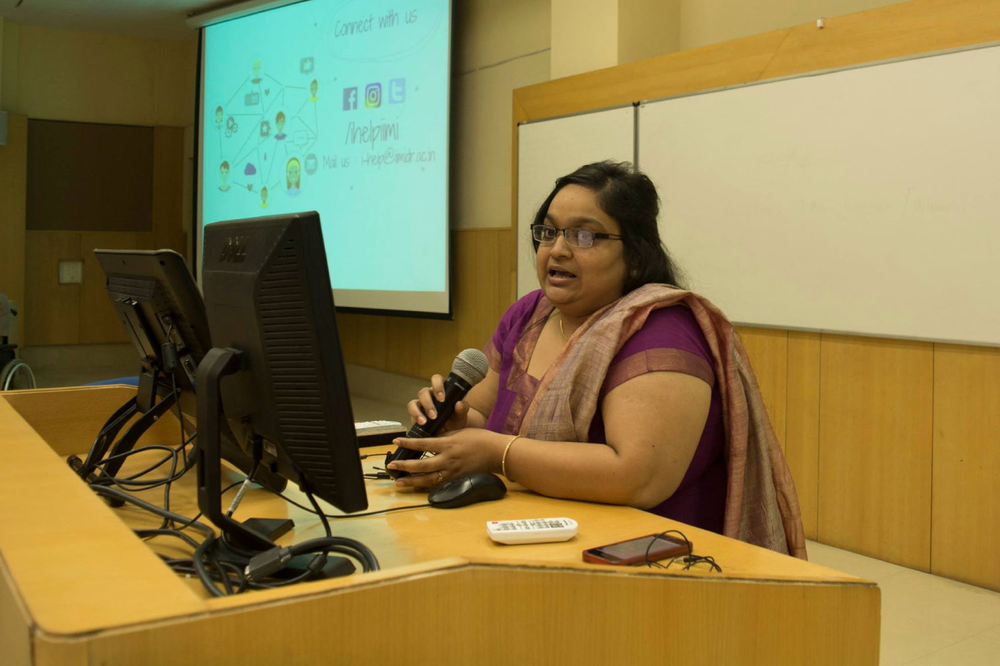

iHelp is a committee of dedicated, like-minded and hard working individuals who believe that education is greatest weapon against all evils of society. It's with this spirit that we associate with various NGOs (private & govt.) to assist them with manpower which has a background from all three streams (Science, Commerce & Arts) to educate, motivate and inculcate the desire to study among those who have been unfortunate enough not to reap the benefits of education.
We wish to educate, encourage, motivate, inspire & lead the underprivileged children of Madhya Pradesh to pursue higher education which will stabalise their economic well-being to a large extent.


Our primary cause is education of underprivileged children, since we believe that education is the key to overall development of an individual. We help these kids by sharing our knowledge with them once in every week. We also work towards analysing the living conditions of these students and research on various other topics that concern their education.
'Charity’ alone is not a lasting solution to enable change for the children living in India today, who have little or no access to education .Thus iHelp is selflessly working for those children .Today because of iHelp , there are several students who are developing a motive to attend classes.They are becoming interactive and getting more exposure.They are getting encouraged for working hard so that they can fulfill all their dreams .
Learn More
i-Help is a student driven initiative at IIM Indore, underpinned by a firm belief in empowerment of India’s underprivileged children, so as to not only enable them to differentiate between right and wrong but also to help the nation in tapping their unexplored potential. We incessantly endeavour to employ creative learning methods to infuse impressionable young minds with curiosity and excitement as these first generation pupils take their unprecedented steps in embarking upon a journey that will lead to their liberation and our contentment. We supplement their classroom sessions with creative educational and extracurricular activities at the IIM campus to equip them to think out of the box and facilitate their smooth absorption into the mainstream core.
I feel tremendously honoured to be a part of this noble initiative and privileged to work with my student colleagues arduously determined in fulfilling their parts as socially responsible citizens.
Surbhi Dayal - iHelp Mentor and Faculty Coordinator
Pillars of our Organization
Faculty humanities and social sciences
Faculty economics
Faculty humanities and social sciences
Communications Faculty
Some stories from our former volunteers
“Working as i-help coordinator was once in a lifetime experience for me. I take a lot of pride in being part of this great initiative right from the beginning. The growth of i-help as an organization was robust over the last three years. In the beginning, we were just motivating the kids to dream big, but now we are more focused on equipping the children to achieve their dreams. i-help surely has a great future like the children we teach. Enthusiastic and passionate volunteers are the key to our success. As social sensitive students, our focus will be in reducing the disparities in the education of children by developing new teaching pedagogies. This year will be a turning point in the journey of i-help as the second generation of volunteers have taken over i-help and the institution looking to scale up.”
Srishti Vinamra“Looking back today, it feels really warm to have lead i help as the coordinator. My favourite highlight is when we got the kids to campus. We did a great job as a team and I am very happy to have lead that team :). i help was more than a montonus thurdasy pilgrimage to school, that's true for me as well as everyone who came along. Some found their joy for teaching, others found that they would rather spend Thursdays in their rooms, some others took it a chance to understand themselves and still others like me gained simply by putting stickers on the kids' notebook. For each one of us who walked few steps with us or the entire mile it has been a journey worth it. Well, we managed coverages in the hot and happening newspaper of planet I with our sober work. That's the kind of popularity I will pick anyday. Today, I wish the new team and teams to come all the very best. I am definite the kids touch our lives more than we do. I miss my I help Thursdays. An experience you shouldn't miss out while on Planet i. :).”